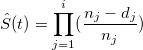
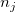
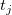
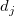

Kaplan-Meier法は、生存確率を推定するステップ関数 (
/math-b4a096d9d2236359a73b7386af0c9ab6.png "t_i\,\!") , i = 1, 2, 3, ..., n)です。これは、観測しているイベントが発生する時間を表し、生存関数は次式で計算されます。
, i = 1, 2, 3, ..., n)です。これは、観測しているイベントが発生する時間を表し、生存関数は次式で計算されます。
Kaplan-Meier法は、生存確率を推定するステップ関数 ( , i = 1, 2, 3, ..., n)です。これは、観測しているイベントが発生する時間を表し、生存関数は次式で計算されます。
,
ここで  は、時間  におけるサンプル数で、は、時間における観測しているイベントと打ち切り観測の数です。